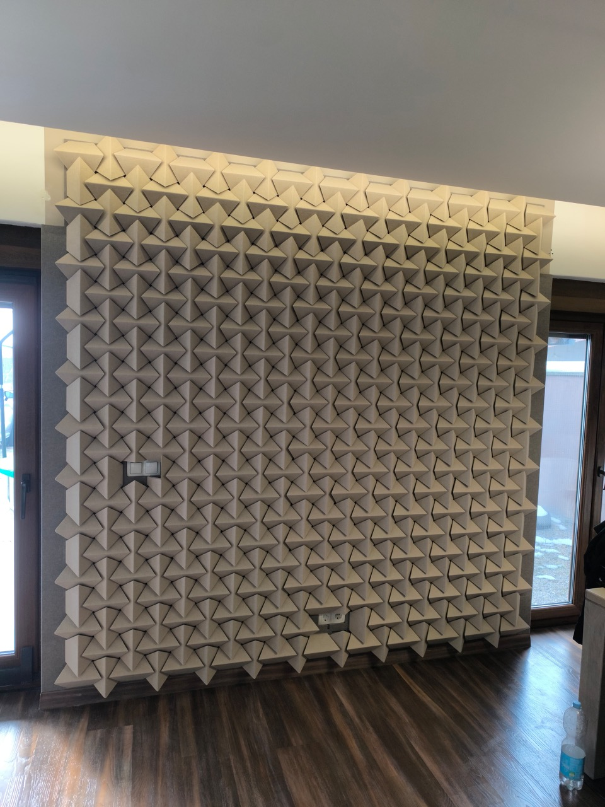

Dodatne fotografije ovog projekta bit će uskoro dodane.
Sračinec
Akustična obrada privatnog doma, dokaz da naša rješenja savršeno pristaju i rezidencijalnim prostorima.

Dodatne fotografije ovog projekta bit će uskoro dodane.